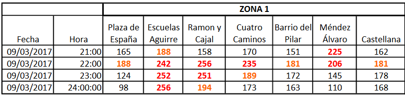

En el mapa se muestran las cinco zonas que actualmente delimita la Comunidad de Madrid teniendo en consideración:
- La distribución de la población.
- La tipología y distribución de estaciones del sistema de vigilancia de la calidad del aire.
- El viario de tráfico, para facilitar la implantación de posibles actuaciones de restricción del mismo.
Y las medidas que se activan cuando hay niveles altos de NO 2 son:
- Reducción de la velocidad a 70 km/hora en la M-30 y accesos.
- Reducción de la velocidad a 70 km/hora en la M-30 y accesos y prohibición del estacionamiento en el interior de la M-30.
- Reducción de la velocidad a 70 km/hora en la M-30 y accesos, prohibición del estacionamiento y de la circulación al 50% de los vehículos en el interior de la M-30.
- Reducción de la velocidad a 70 km/hora en la M-30 y accesos, prohibición del estacionamiento y de la circulación al 50% de los vehículos en el interior de la M-30 y en la M-30.
Como vemos estas medidas se aplican a todo el interior de la M-30, es decir, la zona 1, impidiendo así un tráfico normal por el interior de Madrid.
Esto nos ha llevado a pensar que quizas se podrian aplicar las normas dependiendo de la zona y delimitar unas zonas más pequeñas para que no solo se vea afectado el interior de la M-30. Asi que decidimos analizar los niveles de NO 2 en las distintas zonas que delimita la Comunidad de Madrid. Para ello realizamos un script que a partir de los datos diarios de cada estación, nos diese la media diaria de cada zona, generando la siguiente gráfica:

(*)Las franjas en rojo indican los episodios que han activado las restricciones.
De esta gráfica no pudimos sacar todo lo que esperábamos, pero si que se puede observar que a pesar de que en todas las zonas hay un comportamiento más o menos similar, en los niveles si que hay alguna diferencia significativa, principalmente, los niveles de la zona 4 una de las zonas con menos estaciones, y bastante alejadas del núcleo urbano.
Como apenas se podía extraer alguna conclusión de esto, se decidió generar gráficas por cada una de las distintas zonas, ya establecidas por el protocolo, para tratar así de estudiar con mayor precisión la variación de los niveles de NO 2 por cada una de las estaciones de dichas zonas.
Tras la obtención de las cinco gráficas correspondientes a las zonas y un marcado de los intervalos de días en los cuales se dieron episodios de alta contaminación, procedimos al estudio de éstas:


Lo primero que podíamos ver es que los valores de cada estación por cada día, incluso durante los episodios, no llegaban a rebasar la cantidad de NO 2 de 180 μg/m 3. Ésta es a día de hoy la primera cantidad que, si se ve superada, haría que se activase el nivel de preaviso del protocolo. Éstas medidas relativamente bajas se daban porque cada estación aporta una media de los niveles horarios por día y, por tanto, al no ser un desglose detallado los resultados se veían rebajados.
Nuestra segunda observación fue la de ver en cada zona, y especialmente durante los intervalos de episodios, la diferencia que había entre los niveles aportados por cada estación dentro de la misma zona. Mientras que algunas tenían un comportamiento bastante similar, otras adyacentes podían tener niveles disparados de un día para otro o estar relativamente bajos.
También pudimos observar que aunque en la Zona 1 había demasiadas estaciones y con comportamientos dispares, se aprecia que las que tienen tonos azulados suelen ser más altas que las demas, estas se corresponden a la zona sur de Madrid, esto nos hizo reafirmar que esta zona podría dividirse facilmente en distintas zonas.
Tras este análisis de las gráficas, se vio reforzada aún más la idea que teníamos en mente desde el comienzo del proyecto: aportar como solución a los cortes de circulación una nueva distribución de las zonas en el municipio. Con esto, se quieren optimizar estos cortes de forma que no abarcasen zonas tan amplias innecesariamente y que fuesen más precisas y selectivas, de acuerdo con los niveles de contaminación observados durante los episodios anteriores.
Al empezar a formar las nuevas zonas, en lugar de simplemente dividir las ya existentes, comenzamos por plantearnos qué estaciones agrupar en función de sus altos o bajos niveles durante los episodios. Para ello, usamos unas tablas, aportadas por el Ayuntamiento de Madrid, en las cuales se detallaba por horas qué estaciones habían hecho saltar la alarma por cada episodio. Y tambien nos guiamos por los resultados obtenidos en las graficas intentado que los valores que mas destacaban en cada zona delimitasen una nueva.
Las tablas se presentan de las siguiente forma, y analizamos una por cada uno de los episodios:
Construimos una nueva tabla en la que por filas se distribuían las 24 estaciones, con tantas columnas como episodios se habían registrado en el 2017. En cada columna, consultando a la par las tablas mencionadas antes, se marcaban con una ‘X’ aquellas filas de estaciones que presentaron los valores más altos durante cada episodio. Con esta tabla terminada, se podía observar qué estaciones no habían presentado valores altos o que apenas se habían disparado durante cada episodio, así como también aquellas que siempre hacían saltar las alarmas.
Tras esto, se procedió a hacer un borrador en papel sobre el mapa de Madrid de la delimitación de las nuevas zonas, habiendo marcado los puntos con la situación y número de las estaciones antes. Una vez hecho esto, se generó otro script, para obtener las gráficas de las nuevas zonas, para ver el comportamiento de las estaciones que la componen.


Una vez generadas las gráficas, comprobamos si nuestra nueva distribución tenia coherencia con nuestro objetivo, y así era. Las gráficas arrojaban como resultado unas cantidades de NO2 mucho más similares entre las estaciones agrupadas, a diferencia que con la anterior distribución, en la cual llegaban a ser dispares e incluso menos predecibles. Aunque había estaciones que generaban valores distintos, como por ejemplo la estacion 49 en la nueva zona 3, pero también tratamos de distribuir el mapa adaptandonos a los distritos de Madrid para que tuviese un sentido más lógico para los usuarios, así que estaciones como la anteriormente mencionada, no podian distribuirse de otra manera.